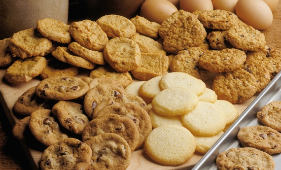

Home | Cookaround
2021.04.25 00:40
COOKAround
Home page Tutte le ricette Antipasti Primi Secondi Contorni Dolci e dessert Blog Guarda la ricettaBiscotti senza glutine
Ricetta del giorno Antipasti e Snack Primi piatti Secondi piatti Salse e Sughi Contorni Dolci e dessert Primi piattiCavatelli ceci e cozze
Dolci, frutta e dessertBrownies M&M's
Primi piattiBavette con zucchine e tonno
Zuppe e minestreCrema di cipolla
Primi piattiPenne con piselli prosciutto e formaggio
Secondi piattiPetto di pollo alla hawaiana
Crocchette di spinaci
Primi piattiTagliatelle al prezzemolo
I nostri speciali
Toscana tra gusto e tradizione
Grecia tra mediterraneo e oriente
Napoli e la Campania a tavola
Tunisia sapori arabi e mediterranei
I dolci
Frollini ai lamponi
Torta soffice al limone
Cous cous dolce alla frutta
Strudel classico
Cuori speziati
Ciambella alla Nutella
Biscotti speziati con l'uvetta
Mousse al caffè
Secondi piattiPolpette al sugo di peperoni
Primi piattiConchiglioni alla sorrentina
Primi piattiRiso al limone e baccalà
Primi piattiGnocchi al salmone
Primi piattiPappardelle al tonno piccante
Primi piattiRisotto ceci e funghi
Gli Ebook
Cookaround: le Ricette di Ropa55
Scarica gratisLa cucina regionale toscana
Scarica gratis Vedi tutti Ricettedai blog Hamburger di patate ripieno Tartufini amaretti cioccolato ed arancia Pasta fredda alla greca, con feta, pomodorini e olive Tonno sott'olio allo Zenzero Dolce all'uva Friggitelli ripieni con mortadella e provola Cotolette di pollo al forno morbide Crepes con la nutella Le vostre
ricette Fagioli all'uccelletta Sarago al cartoccio Straccetti di pollo alla curcuma Spadellata di cozze nere e vongole veraci Fusilli con sugo al tonno, capperi e olive Polpettine di tonno e ricotta Farfalle al salmone e caviale rosso Cookaround
© 2021 Mondadori Media S.p.A. - via Bianca di Savoia 12 - 20122 Milano - P.IVA 08009080964 - riproduzione riservata
